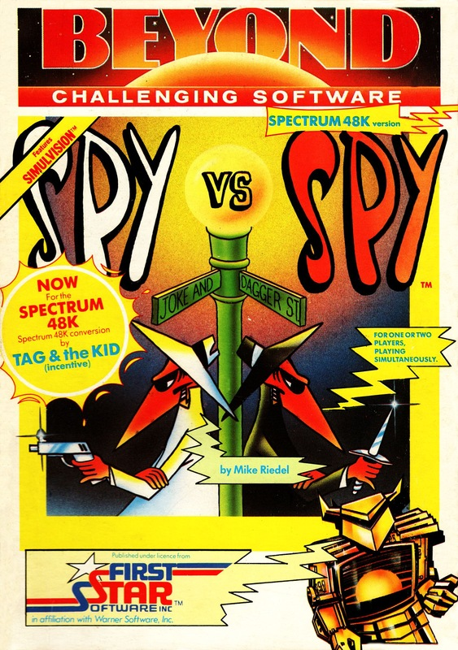
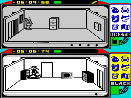
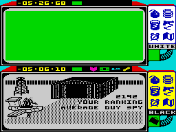

Spy vs Spy


{kind=link}

| Publisher: | Beyond |
| Price: | £9.95 |
| Year: | 1985 |
| Source: | CRASH, Issue 19 |

At long last the Speccy version of this much loved CBM game has mysteriously materialised on my desk. Spy vs Spy is a game based around the antics of that crazy duo from the esteemed pages of MAD magazine. The two spies, one black and one white, constantly battle for supremacy in the cut-throat world of espionage and general skulduggery. The game introduces two new concepts: Simulplay, which is a facility that allows two players to play the game together, each of them controlling one of the two spies; and Simulvision which is a little more novel. If the two spies are in separate rooms then the two rooms are shown on the screen, one above the other. However, if the spies are both in the same room, then only one room is displayed. Without this facility you would never know what the opposition was up to, and that could be very unhealthy!
The basic theme of the game is very simple. If you play against the computer, you play the white spy. You and the guy in the black mac are located in a building near an airfield, and the object of the game is to get out of the building and reach the plane waiting on the runway. You won’t be able to leave the building until you find the correct door and you can’t go through the door unless you are carrying four objects — if you try the security guards will get very nasty. Since you can only carry one object at a time you need to find a briefcase, which is also hidden.

Searching a room simply involves looking behind each of the fixtures and fittings; if an object is behind something then it will be added to your inventory when you look there. Finding the articles is one thing, keeping them is something very different. Your enemy also wants to escape and is equally desperate to acquire the means to do so, and the hunt is complicated by the fact that the spies can set traps for one another.
If the two spies are in the same room then you are unable to search or use traps, in which case you can either indulge in hand to hand combat with your opponent or leave. The advantage of the former course of action is that if you win you will be able to recover the other guy’s inventory, but of course you might lose.... This is where the game has a fairly strong strategic element. If, for example, you had failed to find any of the objects you could wait while the other chap does all of the graft and then ambush him — it could pay off.

To master the game you will have to learn how best to deal with your enemy. A little device called the ‘Trapulator’ is displayed on the side of each screen, which bears six little pictures, the first five of which are booby traps. Via the trapulator, you can use a bomb, a large spring, a bucket of water, a gun and string or a plain old time bomb with a 15 second fuse. The sixth ‘icon’ is a map which helps you find the objects you are searching for and must find in order to escape. The traps must be set according to their type. The gun and string, for example, can only be tied to a door, while the spring or bomb can be left under any piece of furniture. All of the traps, except the time bomb, have remedies. A fire bucket will douse the fuse of a bomb while a pair of scissors will get you past the gun and string. The remedies are located about the building but they can also be moved around by picking them up and and dropping them in a different location. A good trap layer will make sure the appropriate remedy is not to hand when a trap is set. One important point to remember as you dash about setting traps: remember where you put them!
If you are playing against the computer, you can reset its ‘intelligence’ at the start of each game. A rating of five for the computer means the black spy is going to be pretty smart and probably set a lot of traps — on IQ one you are dealing with a dumb thug. And the environment in which the game is played can also be changed at the start of each game. The size of the building can be pre-set, with the smallest having only six rooms while the largest has thirty six rooms and a lot of hidden passageways to boot. Points are scored for giving the other spy a hard time, e.g. killing him. How many points rather depends on how you did it. Points are deducted for using the map as well as for being a victim. If you do get killed, though, you are going to lose a great deal more than a few points. First, unless the other spy is a real gorilla, you will lose the articles you have gathered and secondly you will lose time — that’s very precious because the plane only waits for so long. You can still lose the game, even as you make for the exit, if the plane leaves without you.
CRITICISM
‘I can’t remember when I’ve had so much fun playing a game. I think the immediate appeal of Spy vs Spy is that it is pretty easy to understand. Once you have learnt how to move, search and lay traps and you are off. There are so many degrees of difficulty that the novice is in with a very good chance of winning, but without a hope unless he is well practised. The scope for weird and nasty tactics is immense. Let there be no doubt that bloke in the dark mac brings out the worst in me... it’s as much as I can manage to keep life in perspective when playing against another person. I love it.’
‘To be honest Spy vs Spy was one of my favourite games on the CBM (well, no one’s perfect) and I wondered what the conversion would be like knowing the Speccy’s attribute problems. But then again it was being converted by Tag and the Kid. The main display has been produced in black and white, thus avoiding any problems but this does not detract from the overall feel of the game. The unique split screen system means that the game is instantly playable and addictive because there is terrific scope for games either against the computer or a friend. Spy vs Spy is an excellent game which offers a pleasant change from all of those arcade adventures and shoot ’em ups.’
‘At first I found myself utterly confused by what appeared to be two separate events taking place on the one screen. It’s very important to keep an eye on the other spy but it’s also very difficult. The idea of setting an IQ level for the enemy is great since this allows you to play against a pretty thick opponent and work your way up to something a bit smarter than your average KGB goon. At first I thought the best tactic was simply to dash around the building setting traps and then picking up the pieces but as the building gets larger I tended to run into my own traps so I had to rethink my policy a little. A very absorbing and highly addictive game.’
COMMENTS
| Control keys: | Player 1 — definable; player 2 — N/M left/right, Q/S up/down, 1 to fire |
| Joystick: | Not Kempston |
| Keyboard play: | Responsive, a little complicated with two players |
| Use of colour: | Colour would have meant less detail in the main displays |
| Graphics: | Very good, very close to the original |
| Sound: | Aiding bleeps and bashing noise for hand to hand combat |
| Skill levels: | 5 IQ levels, times eight buildings gives forty levels of play |
| Screens: | Depends on level |
| General rating: | An exciting and demanding game, should last for yonks |
| Use of computer: | 96% |
| Graphics: | 92% |
| Playability: | 93% |
| Getting started: | 89% |
| Addictive qualities: | 93% |
| Value for money: | 87% |
| Overall: | 93% |